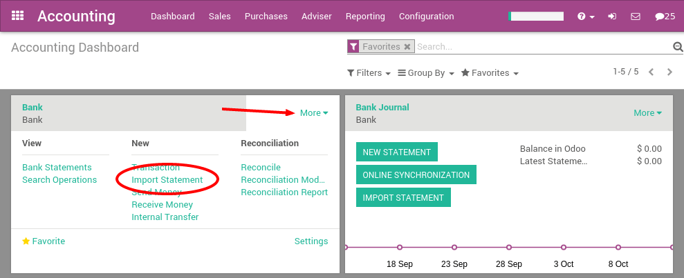
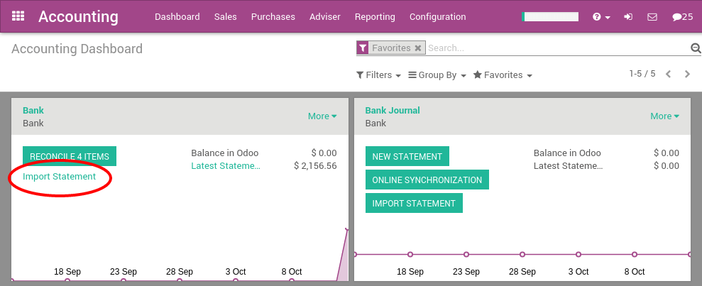

CODA is a file format for bank statements in Belgium. Most Belgian banks, as well as the Isabel software, allows to download a CODA file with all your bank statements.
With Odoo, you can download an CODA file from your bank or accounting software and import it directly in Odoo. This will create all bank statements.
Tip
Test now the feature with this sample CODA file
Configuration
Install the CODA feature
If you have installed the Belgian Chart of Account provided with Odoo, the CODA import feature is already installed by default. In such a case, you can move directly to the next section Import your first coda file
If CODA is not activated yet, you need to do it first. In the Accounting application, go to the menu . From the accounting settings, check the option Import of Bank Statements in .CODA Format and apply.
Import your first CODA file
Once you have installed this feature, you can setup your bank account to allow importing bank statement files. To do this, go to the accounting Dashboard, and click on the button More on the bank account card. Then, click on Import Statement to load your first CODA file.
Load your CODA file in the following screen and click Import to create all your bank statements.

If the file is successfully loaded, you will get redirected to the bank reconciliation screen with all the transactions to reconcile.
Importing CODA files
After having imported your first file, the Odoo accounting dashboard will automatically propose you to import more files for your bank. For the next import, you don't need to go to the More button anymore, you can directly click on the link Import Statement.
Every time you get a statement related to a new customer / supplier, Odoo will ask you to select the right contact to reconcile the transaction. Odoo learns from that operation and will automatically complete the next payments you get or make to these contacts. This will speed up a lot the reconciliation process.
Note
Odoo is able to automatically detect if some files or transactions have already been imported. So, you should not worry about avoiding to import two times the same file: Odoo will check everything for you before creating new bank statements.